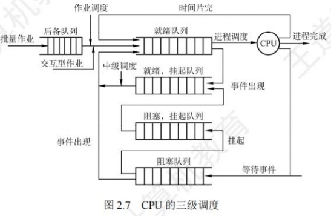
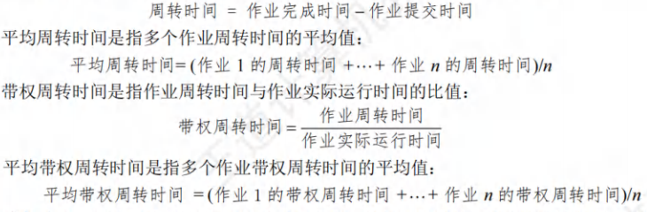

CPU调度
[toc]
调度的概念
调度的基本概念
在多道程序系统中，进程的数量往往多于CPU的个数，因此进程争用CPU的情况在所难免。
CPU 调度是对 CPU 进行分配，即从就绪队列中按照一定的算法（公平、高效的原则）选择一个进程并将CPU分配给它运行，以实现进程并发地执行。
CPU 调度是多道程序操作系统的基础，是操作系统设计的核心问题。
调度的层次

-
高级调度(作业调度)：
- 核心动作：按照某种规则从外存的后备队列中挑选一个（或多个）作业，为其分配内存、I/O设备等必要资源，并建立相应进程，使其获得竞争CPU的权利。
- 本质：内存与辅存之间的调度。
- 特性：每个作业仅调入一次、调出一次；主要用于多道批处理系统，其他系统（如分时、实时）通常无需配置。
-
中级调度(内存调度)：
- 引入目的：提高内存利用率和系统吞吐量。
- 核心动作：将暂时不能运行的进程调至外存（状态变为挂起态）；当进程具备运行条件且内存空闲时，将其重新调入内存（状态改为就绪态，挂入就绪队列）。
- 本质：存储器管理中的对换功能。
-
低级调度(进程调度)：
- 核心动作：按照某种算法从就绪队列中选取一个进程，将 CPU 分配给它。
- 特性：最基本的调度，所有操作系统都必须配置；调度频率极高（通常几十毫秒一次）。
三级调度的联系
作业调度从外存的后备队列中选择一批作业进入内存，为它们建立进程并送入就绪队列；进程调度从就绪队列中选出一个进程，将其状态改为运行态并分配CPU；中级调度为提高内存利用率，将暂时不能运行的进程挂起。具体联系如下：
- 作业调度为进程活动做准备，进程调度使进程正常活动起来。
- 中级调度将暂时不能运行的进程挂起，处于作业调度和进程调度之间。
- 调度频率：作业调度次数最少，中级调度次数略多，进程调度频率最高。
- 进程调度是最基本的调度，不可或缺。
调度的实现
调度程序(调度器)
用于调度和分派CPU的组件称为调度程序，通常由三部分组成：
- 排队器：将系统中所有就绪进程按一定策略排成一个或多个就绪队列，便于调度程序选择。每当进程转为就绪态时，排队器将其插入相应就绪队列。
- 分派器：依据调度程序所选进程，将其从就绪队列中取出，将CPU分配给新进程。
- 上下文切换器：CPU切换时需完成两对上下文切换操作：
- 第一对：将当前进程的上下文保存到其PCB中，再装入分派程序的上下文，使分派程序运行；
- 第二对：移出分派程序的上下文，将新选进程的CPU现场信息装入CPU的各个相应寄存器。
上下文切换需执行大量
load和store指令保存寄存器内容，耗时较多。现有硬件优化方案：采用两组寄存器（一组供内核使用，一组供用户使用），切换时仅需改变指针指向当前寄存器组，减少切换时间。
调度的时机，切换，过程
调度程序是操作系统内核程序。需先发生请求调度的事件，才可能运行调度程序；调度新就绪进程后，才会进行进程切换。实际内核中，若发生调度因素，未必能立即调度与切换，具体情况如下：
1. 可进行进程调度与切换的场景
- 创建新进程后：父、子进程均处于就绪态，需决定运行其一。
- 进程正常/异常终止后：需从就绪队列选进程运行；若无就绪进程，运行闲逛进程。
- 进程因I/O请求、信号量操作等阻塞时：必须调度其他进程运行。
- I/O设备完成中断后：等待I/O的进程转为就绪态，需决定运行新就绪进程或原中断进程。
- 其他强制剥夺场景：更高优先级进程进入就绪队列、当前进程时间片用完（被动放弃CPU）。
2. 进程切换的核心操作
调度完成后通常立即进行进程切换，需：
- 保存原进程当前断点的现场信息；
- 恢复被调度进程的现场信息（内核将原进程现场推入其内核堆栈保存，更新堆栈指针；从新进程内核栈装入现场信息，更新当前进程空间指针，重设PC寄存器），随后运行新进程。
3. 不可进行调度与切换的场景
- 处理中断的过程中：中断处理逻辑不属于某一进程，且实现上难以切换，不应剥夺CPU。
- 完全屏蔽中断的原子操作过程中（如加锁、解锁、中断现场保护/恢复）：原子操作需连续执行，屏蔽中断后更不能调度。
若上述场景中发生调度条件，需置系统请求调度标志，待场景结束后再执行调度与切换。
进程调度的方式
进程调度方式指：当CPU上运行的进程遇到更重要/紧迫的就绪进程时，如何分配CPU。分为两类：
-
非抢占调度方式（非剥夺方式）：
- 定义：进程运行时，即使有更高优先级就绪进程，仍继续执行至进程完成（正常/异常终止）或因事件阻塞（如等待I/O、执行Block原语），才释放CPU。
- 优缺点：实现简单、系统开销小；但无法满足实时/分时系统的响应需求。
- 适用场景：早期批处理系统，不适用分时系统和大多数实时系统。
-
抢占调度方式（剥夺方式）：
- 定义：进程运行时，若有更重要/紧迫的进程需CPU，调度程序可暂停当前进程，将CPU分配给新进程。
- 核心原则：“抢占”需遵循规则，主要包括优先权原则、短进程优先原则、时间片原则。
- 优缺点：提高系统吞吐率和响应效率；但实现复杂度高，系统开销较大。
- 适用场景：分时系统、实时系统及现代大多数操作系统。
闲逛进程
- 触发场景：进程切换时，若系统中无就绪进程，调度闲逛进程（Idle Process） 运行。
- 核心特性：
- PID为0；
- 优先级最低，仅无就绪进程时运行，有就绪进程立即让出CPU；
- 无需CPU之外的资源，不会被阻塞。
线程调度
线程调度分为用户级和内核级，核心区别在于调度主体和切换开销：
-
用户级线程调度：
- 调度主体：内核不知线程存在，仅分配时间片给进程；由进程内部的调度程序决定哪个线程运行。
- 切换开销：同一进程内线程切换，仅需少量机器指令，开销极低。
-
内核级线程调度：
- 调度主体：内核直接选择特定线程运行，无需考虑其所属进程；给选中线程分配时间片，超时则强制挂起。
- 切换开销：需完成完整的上下文切换、修改内存映像、使高速缓存失效，开销远高于用户级线程（差若干数量级）。
调度的目标
调度算法的评价标准（考研核心考点），需从系统和用户角度综合衡量：
-
CPU利用率：
- 目标：使CPU尽可能“忙”，提高资源利用率（CPU是核心昂贵资源）。
- 计算公式：
-
系统吞吐量：
- 定义：单位时间内CPU完成作业的数量。
- 影响因素：作业长度（长作业耗时久，降低吞吐量；短作业耗时短，提高吞吐量）、调度算法与方式。
-
周转时间：
- 定义：从作业提交到作业完成的总时间（含等待时间、就绪排队时间、CPU运行时间、I/O操作时间）。
- 计算公式：

-
等待时间：
- 定义：进程处于等待CPU的时间总和（用户满意度与等待时间负相关）。
- 关键特性：调度算法仅影响就绪队列等待时间，不影响作业执行或I/O操作时间，因此是衡量调度算法优劣的核心指标之一。
-
响应时间：
- 定义：从用户提交请求到系统首次产生响应的时间（交互式系统核心评价指标）。
- 目标：使响应时间处于用户可接受范围，优于周转时间（交互式系统中周转时间参考价值低）。
注：无任何算法能满足所有需求，设计时需平衡：①特定用户需求（如实时进程的快速响应）；②系统整体效率（如降低平均周转时间）；③调度算法自身开销。
进程切换
进程的创建、撤销、I/O操作需通过系统调用进入内核完成，进程切换同样依赖内核支持，因此所有进程均在操作系统内核支持下运行。
上下文切换
- 定义：CPU从一个进程切换到另一个进程时，需保存当前进程状态并恢复另一个进程状态，该过程称为上下文切换。
- 进程上下文：以PCB为载体，包含CPU寄存器值、进程状态、内存管理信息等。
- 切换流程（核心步骤）：
- 挂起当前进程，将其CPU上下文保存到PCB（含程序计数器、其他寄存器）；
- 将当前进程的PCB移入相应队列（如就绪队列、阻塞队列）；
- 选择待执行的新进程，更新其PCB状态；
- 恢复新进程的CPU上下文；
- 跳转到新进程PCB中程序计数器指向的位置，开始执行新进程。
上下文切换的消耗
- 消耗特性：上下文切换是计算密集型操作，需占用可观CPU时间（每秒几十/上百次切换，每次切换耗时纳秒量级），大量切换会严重占用CPU资源。
- 硬件优化方案：部分CPU提供多个寄存器组，切换时仅需改变当前寄存器组的指针，无需搬运寄存器内容，大幅降低切换耗时。
上下文切换与模式切换
两者核心区别（考研易混点）：
| 对比维度 | 模式切换（用户态↔内核态） | 上下文切换 |
|---|---|---|
| 进程是否改变 | 不改变（仍执行同一进程） | 改变（切换到新进程） |
| 发生场景 | 进程因中断/异常进入内核态，执行后返回用户态 | 多任务调度时，需切换进程执行 |
| 发生权限级 | 可在用户态触发（如系统调用） | 仅发生在内核态 |
| 核心目的 | 完成特权操作（如I/O、内存管理） | 实现多进程并发执行 |
总结：模式切换是“权限切换”，上下文切换是“进程切换”；模式切换是上下文切换的基础，但两者无必然关联。
调度算法
调度算法是操作系统中用于分配CPU资源的核心机制，不同算法针对系统目标（如响应时间、吞吐量、公平性）设计，适用于不同场景（分时系统、批处理系统、实时系统等）。以下是七种经典调度算法的详细解析，包括算法思想、优缺点及核心特点。
先来先服务（FCFS）调度算法
先来先服务（First-Come, First-Served）是最基础的调度算法，核心原则是“按到达顺序分配资源”，无优先级或执行时间的区分。
-
算法思想
-
作业调度场景：从后备作业队列中，选择最先进入队列的一个或多个作业，调入内存并分配资源，创建进程后放入就绪队列。
-
进程调度场景：从就绪队列中，选择最先进入队列的进程分配CPU，使其运行至两种情况才释放CPU：① 进程执行完成；② 进程因I/O、等待资源等原因阻塞。
-
-
优缺点
| 优点 | 缺点 |
|---|---|
| 实现简单，逻辑直观，无需复杂的优先级计算或时间预估 | 对长作业/进程“偏袒”：若先到达的是长作业，后续短作业需长时间等待，导致短作业周转时间变长，系统吞吐量下降 |
| 公平性强（按到达顺序分配，无歧视） | 不适用于分时系统或交互场景：若长进程独占CPU，会导致后续交互进程（如用户键盘输入响应）无响应，响应时间差 |
| 无额外开销（无需维护优先级、执行时间等额外信息） | 可能出现“ convoy effect（护航效应）”：一个长进程后面跟着多个短进程，短进程的执行被严重延迟 |
短作业优先（SJF）/短进程优先（SPF）调度算法
短作业优先（Shortest-Job-First）和短进程优先（Shortest-Process-First）本质是同一种算法的不同场景应用，核心原则是“优先分配CPU给执行时间最短的任务”，以优化系统吞吐量。
-
算法思想
-
SJF（作业调度）：从后备作业队列中，选择估计运行时间最短的一个或多个作业，调入内存并创建进程，放入就绪队列。
-
SPF（进程调度）：从就绪队列中，选择估计运行时间最短的进程分配CPU，使其运行至完成或阻塞，再调度下一个最短进程。
-
-
优缺点
| 优点 | 缺点 |
|---|---|
| 能显著降低平均周转时间和平均等待时间，提高系统吞吐量（短任务快速完成，资源利用率高） | 需提前“预估执行时间”：若预估不准确（如用户误报短作业实际为长作业），会导致算法失效 |
| 对短作业/进程友好，适合批处理系统（以吞吐量为核心目标） | 存在“饥饿（Starvation）”问题：若系统持续有短作业进入，长作业会被无限延迟，永远无法获得CPU |
| 无额外的优先级维护开销（仅需比较执行时间） | 不适用于交互场景：无法保证交互进程的响应时间（若交互进程不是最短，会被延迟调度） |
| 非抢占式特性（默认）：若已调度一个长进程，即使后续有更短进程到达，也需等待长进程完成或阻塞，灵活性低（抢占式SJF可缓解，但需额外开销） |
高响应比优先调度算法
高响应比优先调度算法是FCFS和SJF的折中方案，核心原则是“综合考虑任务的等待时间和执行时间，按响应比排序”，既兼顾短任务，又避免长任务饥饿。
-
算法思想
-
主要用于作业调度，每次调度前计算后备队列中每个作业的响应比，选择响应比最高的作业投入运行。
-
响应比计算公式：
响应比 =（等待时间 + 估计运行时间）/ 估计运行时间 = 1 +（等待时间 / 估计运行时间） -
核心逻辑：
- 等待时间相同时：估计运行时间越短，响应比越高（类似SJF，优先短作业）；
- 估计运行时间相同时：等待时间越长，响应比越高（类似FCFS，按到达顺序调度）；
- 长作业等待时间足够长时：“等待时间/估计运行时间”项增大，响应比会超过短作业，避免饥饿。
-
-
优缺点
| 优点 | 缺点 |
|---|---|
| 兼顾短作业和长作业：既保留SJF的高吞吐量，又解决FCFS的“护航效应”和SJF的“饥饿问题” | 需实时计算响应比：每次调度前需遍历所有作业，计算每个作业的等待时间和响应比，额外计算开销较高 |
| 公平性较好：长作业不会被无限延迟，短作业也能优先执行 | 仍需“预估执行时间”：若估计不准，响应比计算会偏差，影响调度效果 |
| 适用于批处理系统，也可用于对公平性要求较高的场景 | 不适用于实时系统：响应比计算和调度存在延迟，无法满足实时任务的“截止时间”要求 |
优先级调度算法
优先级调度算法的核心是“按任务优先级分配CPU”，优先级高的任务优先获得资源，适用于需要区分任务紧急程度的场景（如系统进程、实时任务）。
-
算法思想
-
适用场景：既可用于作业调度，也可用于进程调度。
- 作业调度：从后备队列选择优先级最高的作业，调入内存并创建进程；
- 进程调度：从就绪队列选择优先级最高的进程，分配CPU使其运行。
-
关键分类：
- 按“抢占性”划分：
- 非抢占式：若当前进程正在运行，即使有更高优先级进程进入就绪队列，也需等待当前进程完成或阻塞后，再切换到高优先级进程；
- 抢占式：若有更高优先级进程进入就绪队列，立即暂停当前进程，将CPU分配给高优先级进程（适用于实时系统，保证紧急任务快速响应）。
- 按“优先级稳定性”划分：
- 静态优先级：进程创建时确定优先级，且整个生命周期不变（依据：进程类型、资源需求、用户要求）；
- 动态优先级：进程创建时赋予初始优先级，随运行状态动态调整（如：等待时间越长，优先级越高；运行时间越长，优先级越低），避免饥饿。
- 按“抢占性”划分：
-
-
优先级设置原则：
- 系统进程 > 用户进程（系统进程管理资源，需优先执行）；
- 交互型进程 > 非交互型进程（前台进程需快速响应用户操作）；
- I/O型进程 > 计算型进程（I/O设备速度慢，优先调度I/O型进程可让设备尽早工作，提升整体效率）。
-
优缺点
| 优点 | 缺点 |
|---|---|
| 灵活性高：可根据系统目标设置优先级（如实时系统优先紧急任务，批处理系统优先高吞吐量任务） | 存在“饥饿问题”（静态优先级场景）：低优先级进程可能永远无法获得CPU（动态优先级可缓解，但需额外开销） |
| 适用于多场景：分时、批处理、实时系统均可适配（调整抢占性和优先级规则即可） | 优先级设置依赖经验：若优先级划分不合理（如系统进程优先级过高且长期占用CPU），会导致用户进程无响应 |
| 可快速响应紧急任务（抢占式）：如实时系统中的故障报警进程，能立即抢占CPU | 抢占式切换开销高：高优先级进程频繁进入时，会导致CPU在进程间频繁切换，浪费资源 |
时间片轮转（RR）调度算法
时间片轮转（Round-Robin）是专为分时系统设计的调度算法，核心原则是“按时间片分配CPU，进程轮流执行”，保证各进程公平获得CPU，且响应时间可控。
-
算法原理
-
步骤1：将所有就绪进程按FCFS顺序排成就绪队列；
-
步骤2：系统设置固定“时间片”（如30ms），每隔一个时间片产生一次时钟中断，触发调度程序；
-
步骤3：调度程序将CPU分配给就绪队列队首进程，使其执行一个时间片；
-
步骤4：时间片结束后，无论进程是否执行完成，均剥夺其CPU，将其放回就绪队列末尾，再调度下一个队首进程；
-
特殊情况：若进程在时间片内提前完成（如执行完任务），则立即释放CPU，调度程序直接激活下一个进程。
-
-
核心特点：时间片大小的影响
-
时间片大小直接决定系统性能，需平衡“响应时间”和“切换开销”：
-
时间片过大：若时间片能容纳所有进程执行完成，RR退化为FCFS，短进程等待时间变长；
-
时间片过小：CPU在进程间频繁切换（每次切换需保存/恢复上下文），实际用于用户进程的时间减少，系统开销增大；
-
时间片设置依据：① 系统响应时间要求（交互系统需短时间片，如10-100ms）；② 就绪队列进程数（进程越多，时间片应越小，避免响应延迟）；③ 系统处理能力（CPU速度快，可支持更小时间片）。
-
-
优缺点
| 优点 | 缺点 |
|---|---|
| 公平性强：所有进程按时间片轮流执行，无“偏袒”长进程或高优先级进程的情况 | 时间片设置复杂：需根据系统负载动态调整，否则易导致响应慢或开销高 |
| 响应时间可控：适用于分时系统，能保证用户交互进程（如终端输入）在短时间内获得响应 | 对长进程不友好：长进程需多次轮转才能完成，周转时间比FCFS更长 |
| 实现相对简单（基于FCFS队列+时间片中断） | 切换开销不可忽视：进程数量多时，切换频率高，CPU资源浪费严重 |
多级队列调度算法
多级队列调度算法针对“单一就绪队列无法满足多类型进程需求”的问题，通过设置多个就绪队列，为不同类型进程匹配专属调度策略。
-
算法思想
-
核心设计：系统设置多个就绪队列，每个队列对应一类进程（如“系统进程队列”“交互进程队列”“批处理进程队列”）；
-
队列特性：
- 进程分类固定：进程创建时根据类型（如系统/用户、交互/批处理）分配到对应队列，后续不跨队列迁移；
- 调度策略独立：每个队列可采用不同调度算法（如“系统进程队列”用抢占式优先级，“批处理队列”用SJF）；
- 优先级分层：不同队列可设置全局优先级（如“系统进程队列”优先级最高，批处理队列最低），仅当高优先级队列为空时，才调度低优先级队列；
-
多CPU适配：每个CPU可绑定一个就绪队列，独立执行调度策略，适合多CPU系统的负载均衡。
-
-
优缺点
| 优点 | 缺点 |
|---|---|
| 灵活性高：可针对不同类型进程定制调度策略（如交互进程用RR保证响应，批处理进程用SJF保证吞吐量） | 进程类型划分固定：进程一旦分配到队列，无法根据运行状态跨队列迁移（如批处理进程临时变为交互需求，无法进入交互队列） |
| 支持多场景需求：同时满足系统进程、用户交互进程、批处理进程的不同调度目标 | 队列优先级可能导致饥饿：低优先级队列（如批处理队列）若长期被高优先级队列（如系统进程队列）抢占，队列内进程无法获得CPU |
| 多CPU适配性好：每个CPU独立调度对应队列，减少跨CPU调度开销 | 实现复杂度高于单一队列：需维护多个队列，且需处理队列间的优先级协调 |
多级反馈队列调度算法
多级反馈队列调度算法是RR和优先级调度的综合优化，核心是“动态调整进程的队列层级（优先级）和时间片大小”，兼顾短进程、交互进程和长进程，是公认的“综合性能最优”的调度算法之一。
-
算法思想
-
核心设计：设置多个就绪队列，队列优先级从高到低递减（第1级最高，第n级最低），同时满足三个规则：
- 队列与时间片关联：优先级越高的队列，时间片越小（如第1级时间片10ms，第2级20ms，第i级时间片为第i-1级的2倍）；
- 进程迁移规则：新进程先进入第1级队列末尾，按FCFS调度执行一个时间片：① 若进程在时间片内完成，直接撤离系统；② 若未完成，迁移到第2级队列末尾；以此类推，直到迁移到第n级队列，后续按RR调度（时间片最大）；
- 全局调度规则：按队列优先级调度，仅当第1~i-1级队列为空时，才调度第i级队列；若高优先级队列有新进程进入（如第1级队列新增进程），需立即暂停当前低优先级进程，将其放回原队列末尾，优先调度高优先级进程。
-
场景适配优势：
- 终端型作业（短交互进程）：在第1级队列（小时间片）即可完成，响应快；
- 短批处理作业：在第1~2级队列完成，周转时间短；
- 长批处理作业：虽需迁移到低优先级队列，但每次迁移都能执行部分任务，不会长期饥饿。
-
-
优缺点
| 优点 | 缺点 |
|---|---|
| 综合性能最优：兼顾短进程（响应快）、长进程（无饥饿）、交互进程（低延迟），适配分时、批处理系统 | 实现复杂度高：需维护多个队列，处理进程迁移、时间片调整、优先级抢占等逻辑，系统开销大 |
| 无需预估执行时间：通过动态迁移队列，自动适配进程实际运行时长，避免SJF的预估误差问题 | 对长进程仍有“隐性延迟”：长进程需逐级迁移到低优先级队列，前期执行时间碎片化，整体周转时间比FCFS长 |
| 资源利用率高：I/O型进程在高优先级队列执行（小时间片），I/O阻塞后释放CPU，可调度其他进程，提升CPU和I/O设备利用率 | 队列层级和时间片大小需手动配置：若层级过多或时间片比例不合理，会导致调度效率下降（如层级过多导致迁移频繁） |